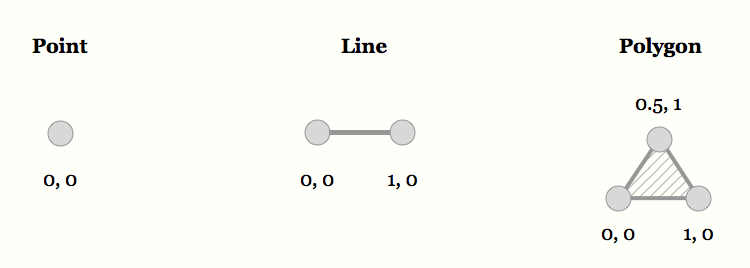
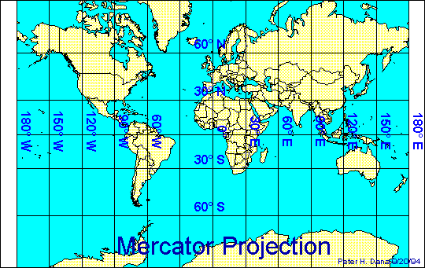
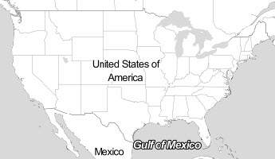
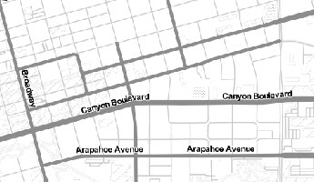

CRDDS Method of the Month
GIS: Introduction
MOTM GIS Miniseries:
All mini-workshops Tuesdays 12:00 to 12:30 pm
In-Depth Workshops:
Tuesdays 12:00 to 2:00 pm
Outline
- What is "GIS"?
- What is "Geospatial Data"?
- Core Concepts
- Common Techniques
What is GIS?
We're surrounded by GIS
GIS:
(Geographic Information System) An integrated collection of computer software and data used to view and manage information about geographic places, analyze spatial relationships, and model spatial processes.
John Snow & Cholera: The classic GIS example
John Snow & Cholera:
- John Snow: physician, anesthesiologist, founder of modern epidemiology
- London cholera outbreak of 1854
- Analyzed patterns of the outbreak to locate epicenter
- Discovered well at epicenter; removed well handle, outbreak stops
But not just any old data...
Geospatial Data!
5 Things:
- Points
- Lines
- Polygons
- Pixels/Cells
- And their associated attributes
Vector Data
Raster Data


And their attributes...
Cells have values, aka attributes
Digital Elevation Model
(DEM)
- White Cell = 2402.89m
- Black Cell = 1735.06m

More on data in 2 weeks!
Finding GIS Data Sept 22
But... putting stuff on a map is more compicated than it seems...
2 Things:
- Datums
- Projections
Because Earth's shape is irregular and changing, assigning locations is imperfect.
We use imaginary reference systems to approximate.
We tend to call this a "datum."
Common Datums: NAD83, WGS84
In GIS, we often use the terms
"Datum",
"Coordinate Reference System",
and
"Geographic Coordinate System"
interchangeably.
GIS data usually has a coordinate system built right in.
GIS software will read that information and place your data in the right location
...Usually.
You might consider the datum to be the "grid",
like latitude and longitude.

Projection, or how we warp the grid
Projection
Mercator Projection
Good for direction
Bad for shape/size
(Hello Greenland!)
Gall-Peters Projection
Scale
Small Scale
Lage Scale
